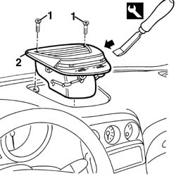
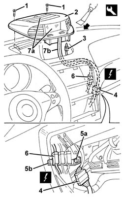

5010C24 upper air outlet on facia - r r
- Path
- Procedures > 50 AUXILIARY UNITS > 5010 CLIMATE CONTROL - MISCELLANEOUS > 5010C air outlet and diffusers > 5010C24 upper air outlet on facia - r r
- Kind
- repair procedure (removal / refitting; the operation number is the code)
- Applies to
- all engines; all production periods
- Interactive page
- https://sloeber94.github.io/elrnDB-a156/en/#/3238256
Applies to: all engines; all production periods
 Removing
Removing
 Refitting
Refitting1. Unscrew the bolts
2. Remove the vent using the special tool.
 | Name | Country |
|---|---|---|
2 | Scraper blade | 1.823.014.000 |

Applies to: all engines; all production periods
Refitting
RemovingCheck that the vent is not damaged.
Fit the vent in its seating.
Do up the bolts.
Test the operation of the vent and the various adjustment possibilities.
Applies to: all engines; production: da 03/02 a 09/03, da 10/03
Removing
Refitting7040G24 switch for facia compartment light - r+r
7040G20 facia compartment light bulb holder - r+r
7040A65 passenger compartment box lock , one , r r
7040L37 gear lever plate - r r
5040D18 air conditioner control unit - r r
7040A25 central facia trim - r r
5560C51 combined analogue control panel - r+r or replace
1. Unscrew the bolts
2. Release the centre vent with Infocenter from the housing using the special tool.
| Name | Country |
|---|---|---|
1 | Scraper blade | 1.823.014.000 |
3. Release the anti-theft device on warning light from the housing.
4. Working in the dashboard compartment, disconnect the electrical connector.
 | Name | Connector |
|---|---|---|
4 | INFOCENTER / dashboard coupling |
5. Undo the bolt (5a) and extract the support and electrical connections (5b).
6. Disconnect the electrical connections.
| Name | Connector |
|---|---|---|
6 | Solar sensor |
7. Remove the centre vent with Infocenter (7a), complete with cables (7b).

Applies to: all engines; production: da 03/02 a 09/03, da 10/03
If necessary, 5560C64 electronic unit(infocentre) - replace after checking operation with special equipment
If necessary, 5010D56 solar sensor - r r after checking electrical system
Applies to: all engines; production: da 03/02 a 09/03, da 10/03
Refitting
RemovingCheck that the centre vent with Infocenter is not damaged.
If necessary, 5560C64 electronic unit(infocentre) - replace after checking operation with special equipment
If necessary, 5010D56 solar sensor - r r after checking electrical system
Place the centre vent with Infocenter complete with cables in the housing.
Connect the electrical connection for the radiation sensor.
Fasten the support and electrical connections in the housing.
Connect the electrical connection for the Infocenter.
Fit the anti-theft device warning light in the housing.
Engage the centre vent and Infocenter in the housing.
Tighten the screws.
5560C51 combined analogue control panel - r+r or replace
7040A25 central facia trim - r r
5040D18 air conditioner control unit - r r
7040L37 gear lever plate - r r
7040A65 passenger compartment box lock , one , r r
Topics linked from this page (15)
- 5010D56 solar sensor - r r after checking electrical system
- 5040D18 air conditioner control unit - r r
- 5560C51 combined analogue control panel - r+r or replace
- 5560C64 electronic unit(infocentre) - replace after checking operation with special equipment
- 5570T80 car radio unit - r+r
- 7040A25 central facia trim - r r
- 7040A31 flap assembly - r r
- 7040A65 passenger compartment box lock , one , r r
- 7040G20 facia compartment light bulb holder - r+r
- 7040G24 switch for facia compartment light - r+r
- 7040L20 tunnel trim - r r
- 7040L37 gear lever plate - r r
- 7065C42 ashtray (one) r+r
- D90 INFOCENTER / dashboard coupling
- K90 Solar sensor
Topics that link to this page (13)
- 5010C30 central air outlet on fascia - r+r
- 5020L10 additional heater system boiler - r r
- 5040B30 expansion valve (tube orifice) - r+r
- 5040C10 air conditioner box - r+r
- 5040C50 air conditioner heater radiator - r+r
- 5040D52 air inlet and recirculation flap actuator - r r
- 5040D76 air contitioner distribution flap control motor - r r
- 5040D84 air conditioner left hand air mixer flap control motor - r r
- 5040D86 air conditioner right hand air mixer flap control motor - r r
- 5040D90 air conditioner system wiring bundle - r r
- 5560C64 electronic unit(infocentre) - replace after checking operation with special equipment
- 7040A10 instrument facia trim - r+r
- 7040A97 facia trim support beam - r r